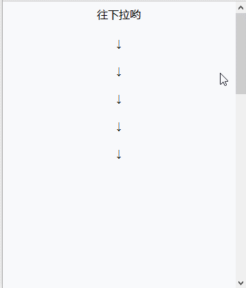

往下拉哟
↓
↓
↓
↓
↓
随着网站的不断发展，需要展示的内容也越来越丰富，这导致网页上能展示的内容越来越多。当内容堆积影响了用户体验，就需要考虑如何提升用户体验。在这一系列改动种，"回到顶部"的功能成了一个经典。
方法一：用命名锚点击返回到顶部预设的id为top的元素
代码如下：
<a href="#top" target="_selt">返回顶部</a>
方法二：操作scroll函数来控制滚动条的位置(第一个参数是水平位置，第二个参数是垂直位置)
代码如下：
<a href="javascript:srcoll(0,0)">返回顶部</a>
缺点：返回效果是立即的，不符合一般浏览页面的滚动习惯；
静态固定于页面底部，用户不一定看得到。
(1)我们先简单的搭建一个长度为1200px的页面，保证视口的足够高度。
<!DOCTYPE html> <html lang="en"> <head> <meta charset="UTF-8"> <meta content="width=device-width,user-scalable=no" name="viewport" /> <title>Back to top</title> <style type="text/css"> #content { height: 1200px;} .text_center { text-align: center;} </style> </head> <body> <div id="content"> <div class="text_center">往下拉哟</div><br /> <div class="text_center">↓</div><br /> <div class="text_center">↓</div><br /> <div class="text_center">↓</div><br /> <div class="text_center">↓</div><br /> <div class="text_center">↓</div> </div> </body> </html>
(2)然后我们准备一张图片作为返回顶部的按钮：
(3)接着，我们把按钮放到网页上去：
HTML代码：
<body> ... <a id="btnTop" class="btnTop" href="javascript:;" title="Back to top"> <img src="img/o_to_Top.png" class="imageTop"> </a> </body>
CSS代码：
.btnTop { position: fixed; right: 2%; bottom: 2%; cursor: pointer; opacity: .7; z-index: 9; } .btnTop:hover { opacity: 1;} .imageTop { height: 72px; height: 72px;}
现在的显示效果：
原理：通过控制当前视口顶端的数值来实现。
返回顶部按钮默认不显示，当下滑到一定距离时显示。点击按钮后，当前页面由快到慢地返回页面顶部。
实现：
我们先让返回页面按钮默认不显示：
<a id="btnTop" style="display:none;" ...
然后，我们新建JavaScript文件并引用，具体功能实现代码如下，应该备注的比较详细：
window.onload = function(){ var btnTop = document.getElementById("btnTop"); var timer = null; window.onscroll = function(){ var backTop = getScrollTop(); if(backTop >= 20){ //当前视口顶端大于等于20时，显示返回顶部的按钮 btnTop.style.display = "block"; }else { btnTop.style.display = "none"; } }; btnTop.onclick = function(){ //定时执行 timer = setInterval(function(){ var backTop = getScrollTop(); var speedTop = backTop / 10; //修改当前视口的数值，产生向上活动的效果 setScrollTop(backTop - speedTop); if(backTop == 0){ //结束函数执行 clearInterval(timer); } },30); }; //获取当前视口的顶端数值 var getScrollTop = function(){ var sTop ; if (document.compatMode == "BackCompat") { sTop = document.body.scrollTop; } else { //document.compatMode == \"CSS1Compat\" sTop = document.documentElement.scrollTop == 0 ? document.body.scrollTop : document.documentElement.scrollTop; } return sTop; }; //设置当前视口的顶端数值 var setScrollTop = function(top){ if (document.compatMode == "BackCompat") { document.body.scrollTop = top; } else { if(document.documentElement.scrollTop == 0){ document.body.scrollTop = top; }else{ document.documentElement.scrollTop = top; } } } };
现在的效果如下图：

效果展示：点击跳转
原贴地址：http://www.cnblogs.com/yc-755909659/p/5988005.html